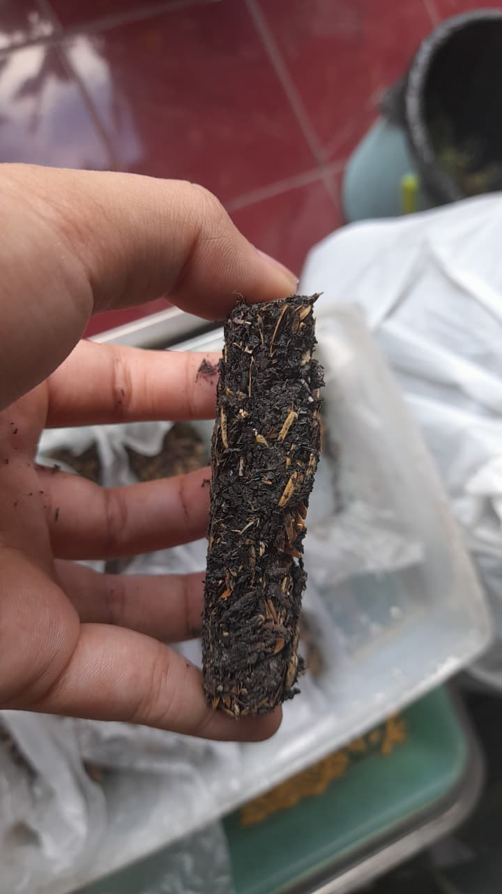
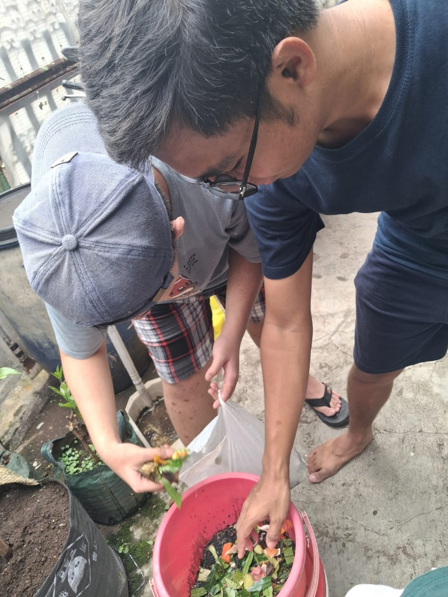
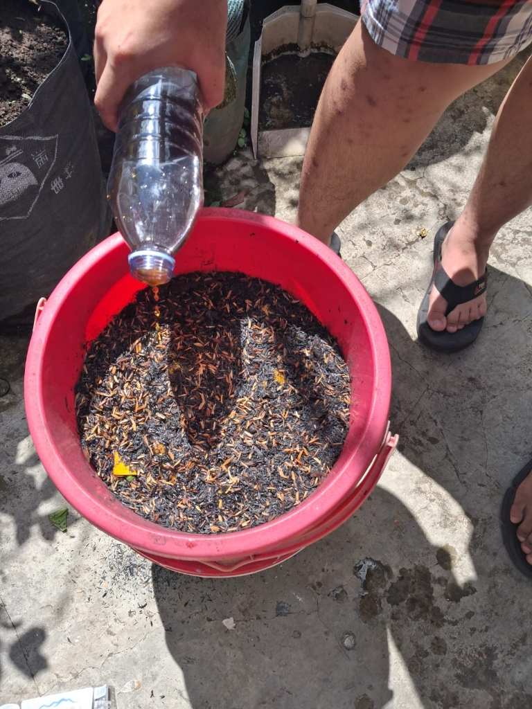
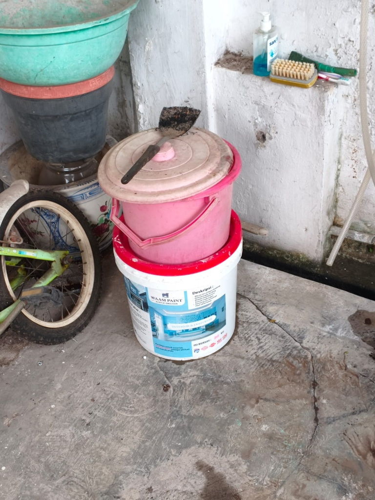
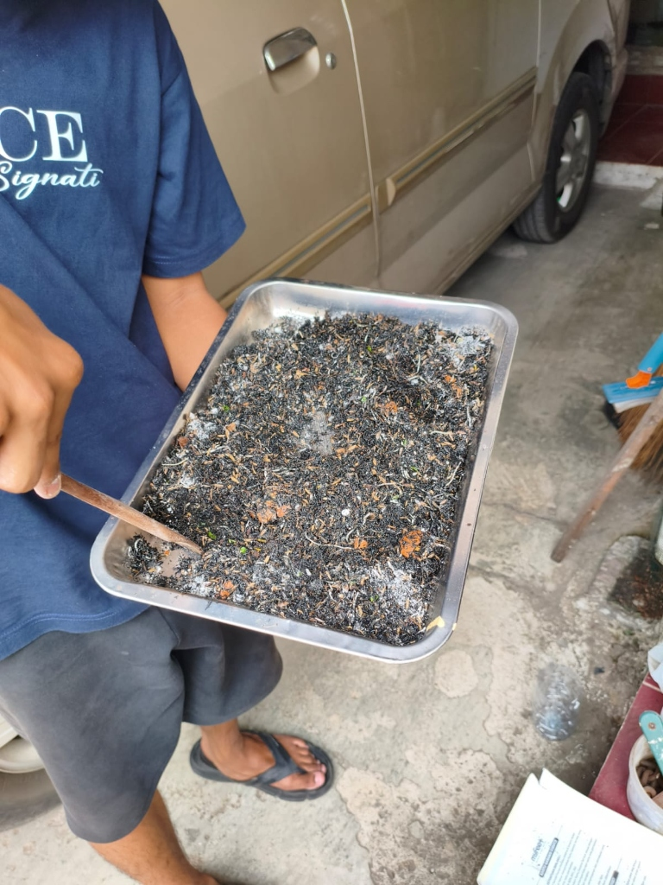
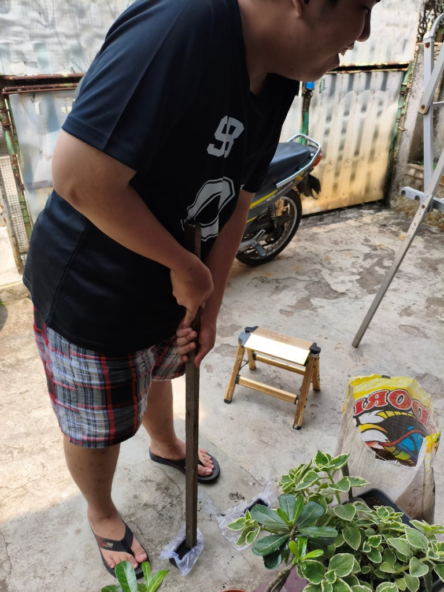
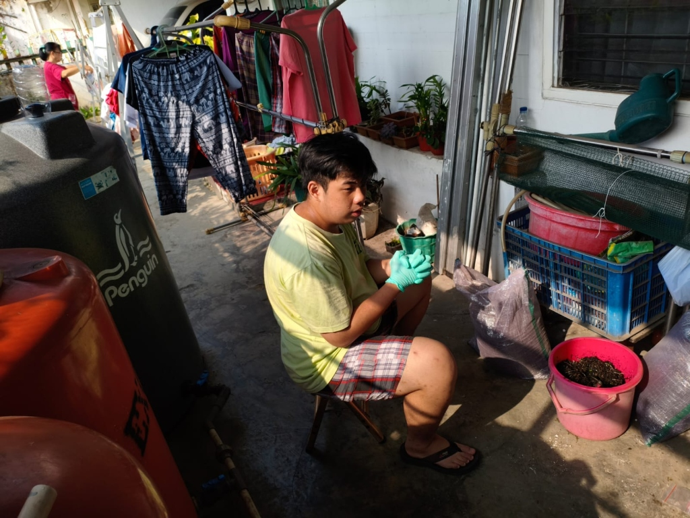
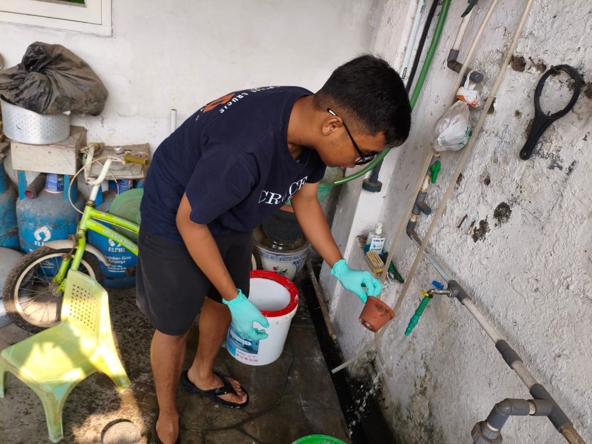
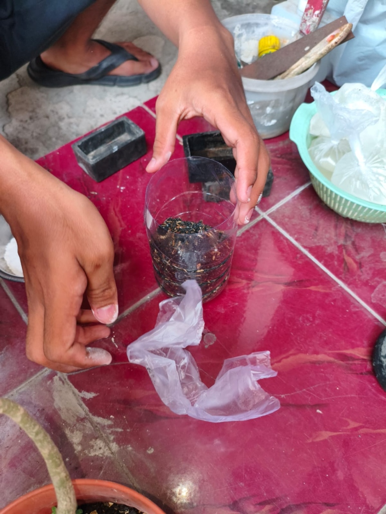

BRIKETKOMPOS. Waste BecomesTreasure.
Briket Kompos: inovasi hijau dari sampah organik sekolah menjadi pupuk alami berkualitas tinggi yang menyuburkan tanah dan menjaga bumi. Compost Briquettes: a green innovation turning school organic waste into high-quality natural fertilizer that nourishes the soil and protects the earth.

Mengenal Briket Kompos Understanding Compost Briquettes
Briket
What is a Briquette?
Briket adalah bahan padat yang dipadatkan dari bahan-bahan butiran atau serbuk melalui proses pencetakan menggunakan tekanan. Umumnya dikenal sebagai bahan bakar padat alternatif, namun dalam inovasi modern teknologi briket dapat diaplikasikan pada pupuk untuk mencegah nutrisi cepat menguap, menghemat ruang penyimpanan, dan memastikan dosis yang lebih presisi saat diberikan pada tanaman.
A briquette is a solid material compacted from granular or powdered materials through a molding process using pressure. Commonly known as an alternative solid fuel, but in modern innovation, briquetting technology is applied to fertilizers to prevent rapid nutrient evaporation, save storage space, and ensure more precise dosing when applied to plants.
Kompos
What is Compost?
Kompos adalah hasil penguraian bahan organik (sisa makanan, daun, sampah hijau) oleh mikroorganisme menjadi humus kaya nutrisi yang menyuburkan tanah secara alami. Proses pengomposan tidak hanya menghasilkan unsur hara makro (NPK) yang sangat dibutuhkan oleh ekosistem pertanian, tetapi juga berfungsi mengembalikan struktur tanah yang rusak akibat zat kimia, serta menjadi solusi utama gerakan zero waste di sekolah kita.
Compost is the result of organic material (food scraps, leaves, green waste) being broken down by microorganisms into nutrient-rich humus that naturally enriches the soil. The composting process not only produces the macro nutrients (NPK) critically needed by agricultural ecosystems, but also restores soil structure damaged by chemicals and serves as the ultimate solution for our school's zero waste movement.
Briket Kompos
Compost Briquette
Inovasi brilian berupa kompos murni yang dicetak menjadi briket padat — mudah ditakar, disimpan lama, dan diaplikasikan langsung ke tanaman dalam pot atau lahan kebun. Briket ini bekerja dengan sistem slow-release (pelepasan perlahan) ketika terkena air siraman, memastikan pasokan nutrisi ke akar tanaman terjadi secara kontinu, tidak mudah tercuci oleh hujan, dan sangat ideal dipakai oleh petani maupun pecinta urban farming masa kini.
A brilliant innovation where pure compost is molded into solid briquettes — easy to measure, store for a long time, and apply directly to plants in pots or garden beds. These briquettes work with a slow-release system when watered, ensuring a continuous supply of nutrients to plant roots that won't easily wash away with rain, making it highly ideal for both farmers and modern urban farming enthusiasts.
Kenapa Briket Kompos? Why Compost Briquettes?
Lebih dari sekadar pupuk — solusi ekosistem yang holistik untuk tanah, tanaman, dan bumi. More than just fertilizer — a holistic ecosystem solution for soil, plants, and the earth.
Memperbaiki Struktur Tanah
Improves Soil Structure
Manfaat Tanah
Soil Benefits
Selain meningkatkan porositas dan aerasi, briket kompos secara aktif memperbaiki keseimbangan pH tanah. Kandungan humusnya memastikan tanah tetap gembur dalam jangka panjang, mencegah pengerasan tanah, dan meningkatkan kemampuan akar untuk menyerap nutrisi esensial secara maksimal.
Beyond improving porosity and aeration, compost briquettes actively restore soil pH balance. Its humus content ensures long-term soil friability, prevents soil hardening, and enhances the roots' ability to maximize essential nutrient absorption.
Meningkatkan Biota Tanah
Enhances Soil Biota
Ekosistem Hidup
Living Ecosystem
Bertindak sebagai stimulan biologis yang menghidupkan kembali mikroba tanah menguntungkan. Mendukung pertumbuhan fungi mikoriza untuk memperluas area pencarian nutrisi tanaman, serta menciptakan benteng alami melawan serangan hama tanah melalui keseimbangan ekosistem.
Acts as a biological stimulant that revives beneficial soil microbes. Supports the growth of mycorrhizal fungi to expand the plant's nutrient forage area and creates a natural defense against soil pests through ecosystem balance.
Nutrisi Slow-Release
Slow-Release Nutrients
Efisiensi Nutrisi
Nutrient Efficiency
Struktur padat briket dirancang untuk melepaskan unsur hara secara terkendali (controlled-release). Sangat efektif mencegah pencucian hara (leaching) saat hujan lebat, memastikan tanaman mendapatkan asupan nutrisi yang stabil setiap harinya secara efisien.
The solid structure is designed for controlled-release of nutrients. It is highly effective in preventing nutrient leaching during heavy rains, ensuring plants receive a stable daily supply of nutrients efficiently.
Zero Waste
Zero Waste
Kelestarian Hijau
Green Sustainability
Mengubah limbah organik sekolah menjadi produk sekunder yang berharga. Strategi ini secara nyata membantu pengurangan emisi gas metana di TPA dan menanamkan budaya ramah lingkungan serta kemandirian pengelolaan sampah bagi seluruh warga sekolah.
Converts school organic waste into valuable secondary products. This strategy significantly helps reduce methane gas emissions in landfills and instills an eco-friendly culture and waste management independence for all school members.
Hemat Biaya
Cost-Efficient
Ekonomi Sirkular
Circular Economy
Menghilangkan ketergantungan pada pupuk kimia mahal dengan bahan baku gratis dari lingkungan sekolah. Meningkatkan produktivitas tanaman dalam jangka panjang sekaligus menekan biaya operasional perawatan taman hingga titik terendah.
Eliminates dependence on expensive chemical fertilizers with free raw materials from the school environment. Increases long-term plant productivity while reducing garden maintenance operational costs to the lowest point.
Didukung Riset & Data Backed by Research & Data
Bukan sekadar klaim — bukti ilmiah yang menguatkan urgensi solusi ini. Not just claims — scientific evidence strengthening the urgency of this solution.
Pupuk organik secara konsisten terbukti meningkatkan kesehatan tanah dan produktivitas tanaman, mengurangi ketergantungan pada input kimia secara signifikan.
Organic fertilizers consistently prove to improve soil health and crop productivity, significantly reducing dependence on chemical inputs.
Volume sampah di Indonesia mencapai 34,2 juta ton pada 2024, dengan 40–45% di antaranya merupakan sampah organik rumah tangga yang belum dimanfaatkan secara optimal.
Indonesia's waste volume reached 34.2 million tons in 2024, with 40–45% being household organic waste not yet optimally utilized.
Pemberian kompos organik mampu meningkatkan biomassa mikroba tanah, memperbaiki struktur tanah, serta meningkatkan retensi air dan zat hara yang tersedia bagi tanaman.
Organic compost application can increase soil microbial biomass, improve soil structure, and enhance water and nutrient retention available to plants.
Pengolahan limbah organik sekolah menjadi pupuk briket dapat mengurangi emisi gas rumah kaca dari sektor limbah rumah tangga hingga 30% per tahun.
Processing school organic waste into briquette fertilizer can reduce greenhouse gas emissions from the household waste sector by up to 30% annually.
Efisiensi penyerapan Nitrogen oleh akar pada sistem pupuk padat (briket) tercatat 40% lebih tinggi dibandingkan sistem pupuk curah konvensional.
Nitrogen absorption efficiency by roots in solid fertilizer systems (briquettes) is recorded 40% higher than conventional bulk fertilizer systems.
Program Zero Waste berbasis sekolah merupakan model edukasi lingkungan paling efektif dalam membentuk karakter keberlanjutan pada generasi muda.
School-based Zero Waste programs are the most effective environmental education models in shaping sustainability character in the younger generation.
Mengapa Memilih Briket Kompos?
Inilah pendapat dari tim kami mengenai keunggulan briket kompos sebagai solusi pupuk masa depan.
"Menurut saya, briket kompos ini sangat revolusioner karena bisa mengurangi bau sampah organik di sekolah dan lebih mudah dikemas secara rapi."
"Bentuknya yang padat membuat nutrisi di dalamnya tidak mudah luntur saat penyiraman, sehingga tanaman mendapatkan pupuk secara bertahap."
"Inovasi ini mendukung gerakan Zero Waste di SMA Trinitas. Dari siswa, oleh siswa, dan untuk bumi yang lebih hijau."
"Dengan briket kompos, kita tidak perlu repot lagi menggali tanah. Cukup letakkan dan briket akan menyuburkan tanaman."
Dokumentasi Pembuatan Kompos Compost Production Documentation
Berikut adalah potret dokumentasi kegiatan pembuatan briket kompos oleh tim kami secara langsung. Here are several snapshots documenting our team's hands-on compost briquette production process.




Dokumentasi Pembuatan Briket Briquette Production Documentation
Berikut adalah potret dokumentasi kegiatan pembuatan briket kompos oleh tim kami secara langsung. Here are several snapshots documenting our team's hands-on compost briquette production process.




Tertarik dengan Produk Kami? Interested in Our Product?
Hubungi kami langsung melalui WhatsApp untuk informasi lebih lanjut atau pemesanan. Contact us directly via WhatsApp for more information or to place an order.